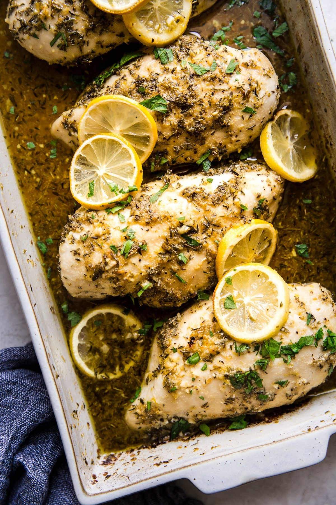

Baked Lemon Chicken

Description
Our easy lemon chicken recipe shines with a sunny, lemony zing. Garlic and herbs—plus a glug of white wine—mean that these juicy, tender chicken breasts are as delicious as they are healthy.
Ingredients
- 4 chicken breasts, approximately 2 1/2 pounds
- 1/4 cup olive oil
- 1 1/2 teaspoons dried oregano
- 1 1/2 teaspoons dried thyme
- 1 1/2 teaspoons garlic powder
- 1 1/2 teaspoons kosher salt, divided
- 1/4 teaspoon fresh ground black pepper
- 1/2 cup dry white wine
- 2 tablespoons minced garlic
- 2 teaspoons freshly grated lemon zest
- 2 tablespoons fresh lemon juice
- 1 tablespoon brown sugar
- 1 lemon cut into 6 slices (optional)
- 1/2 cup flour
Directions
- Preheat the oven to 400°F with a rack in the center position.
- Pat the chicken dry and place them in a 9x13-inch baking dish.
- In a small bowl, combine the olive oil, oregano, thyme, garlic powder, 1 teaspoon of the salt, and pepper. Coat the chicken all over with the mixture.
- In the same bowl, mix together the wine, garlic, lemon zest, lemon juice, brown sugar, and remaining ½ teaspoon of the salt. Pour the sauce over chicken and nestle the lemon slices in between the breasts if using.
- Bake for 15 minutes, then remove the dish from the oven and baste the chicken with the juices. Return the dish to the oven and bake for another 15 minutes, or until the internal temperature of the chicken reaches 165°F on an instant-read thermometer.